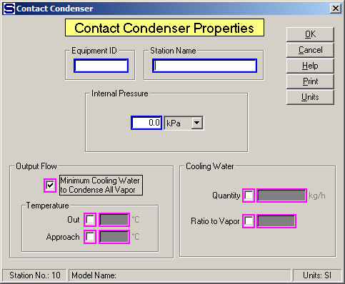

Equipment ID An equipment ID of up to 11 characters can be used to identify the station with an actual station in the process. Any combination of numbers and letters that are used in the factory/refinery to identify equipment can be entered. For example, Equipment ID = 123.456A. It is not necessary to make an entry in the Equipment ID field if the station in the model does not have a corresponding station in the factory/refinery.
Station Name A name of up to 20 characters must be entered for the station. For example, Station Name = Pan Vapor Cond.
Internal Pressure Enter an internal pressure for the contact condenser if pressure feedback is being used for the vapor flow into the condenser. For example, Internal Pressure = 30 kPa to make the vapor flow line into the contact condenser have a pressure of 30 kPa if the station supplying the vapor is using pressure feedback to control the pressure of the vapor leaving the station.
Output Flow Either click the box to calculate the Minimum Cooling Water to Condense All Vapor flow into the condenser, or specify the temperature of the water leaving the condenser. Selecting the minimum cooling water calculation will cause Sugars to calculate the minimum cold water flow necessary to completely condense the vapor. The temperature of the combined cold water and vapor flow out will be just slightly below the vapor saturation temperature. Alternatively, the temperature of the combined flow out can be held to a specified temperature by clicking the box next to the temperature selection, or the approach temperature can be specified. Magenta colored borders on the entry fields are used to indicate that only one of the entries can be selected; that is, when one is selected the others are not accessible. Select the appropriate entry field by checking the small box next to the field.
Temperature Select either the temperature of the output flow or the approach temperature of the output flow to the flow into port 0.
Out Enter the temperature of the output flow from the condenser that is to be controlled by the cooling water flow into the condenser. For example, Temperature Out = 45.0.
Approach Enter the temperature of approach that will be used to control the cooling water flow into the condenser. The temperature of approach is the difference between the vapor saturation temperature and the water output flow if the port 0 input flow is vapor. Otherwise, the temperature of approach is the difference between the temperature of the flow into port 0 and the water output flow if the port 0 input flow doesn’t contain vapor. For example, Temperature Approach = 20.0
Cooling Water Select either the Quantity or Ratio to Vapor entry field by clicking in the small box next to the field. This will cause the other fields to gray out and not be accessible for entry. After the box is checked, make an entry in the selected field.
Quantity Select the Quantity entry field by clicking in the box to the left of the entry field. Enter the quantity of cooling water into the condenser in the weight units shown to the right of the entry field. The quantity of output flow will be the sum of the vapor flow in plus the specified cooling water flow. For example, Quantity = 124500.0 means that 124,500 weight units (kg, or lb) per hour will be added to the vapor flow; however, if insufficient cold water is specified, the combined flow out of the condenser may still contain vapor.
Ratio to Vapor The quantity of cold water flow is controlled by a ratio value of the quantity of vapor flow into the condenser. For example, Ratio = 3.0 means the weight quantity of cold water flow will be three times the weight quantity of vapor flow.